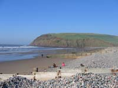
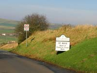
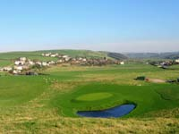
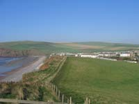

St Bees Tourist Information

Several interesting old houses feature amongst those which line the long main street descending to sea level and a coastline deservedly designated a Heritage Area.
St. Bees Head, a major sea cliff, is a bird-watchers Elysium and one of England's main sea-bird colonies with a miscellany of bird life including razor-bills, puffins, guillemots and herring gulls.
{kind=link}

{kind=link}
St. Bees was named after St Bega, who, according to legend, was shipwrecked off the coast in the 9th Century after fleeing Ireland and an arranged marriage. The saga goes on to relate that on arrival she sought land on which to settle. She was told by the local lord, she could have all the land which was covered by snow on the following day. Bearing in mind that it was mid-summer at the time, it seemed unlikely. However, the next morning saw that snow had indeed fallen and St Bega was granted an area of land about 3 miles in length of the coastline.

Excavations in 1981 of the former Chancel, unearthed a female skeleton and a lead coffin in which was the well preserved body of a male thought to be someone of local prominence. A “history area” in the church and the museum in Whitehaven provide information on what became known as “St Bees Man”.
A television programme, “Frozen in Time, Mummies Forever” featured the find and was shown in England and America.
{kind=link}

{kind=link}
Canon Parkinson, principal of the Theological College and Vicar of St Bees had a close acquaintaince with William Wordsworth in his old age, and the following entry is found in his diary...
"May 5th., 1848 – "A delightful day – spent in the company of Wordsworth at his son John’s at Brigham. He walked and talked with his usual power and vigour, although 78 years have told upon his features and slightly upon his memory. He was exceedingly kind to myself. Home ay 9 after a long to be remembered day".
How to get there:
By rail: St. Bees is on the Barrow to Carlisle West Coast Rail Link.
From the South, take the London to Scotland West Coast main line and change at Lancaster for St. Bees.
From the North, change at Carlisle for St. Bees.
By road: Reach us on the B 5345 from the A595 between Calder Bridge and Egremont.
Attractions in St Bees |
The Beach and Coastline
St. Bees stands close to a safe sandy one mile stretch of beach with promenade, wheelchair access, children’s play area and toilet facilities. The sands are a well known source of gem stones which are frequently uncovered by the rise and fall of the tides and attract collectors from all over the region. The impressive sandstone cliffs of St Bees Head rising in places to almost 300 feet, dominate the northern end of the beach and are home to one of the largest sea bird colonies in Britain. Here, the wildlife enthusiast may observe a variety of species including puffins, razor bills and black guillemot from conveniently placed RSPB.viewing points. It is a section of a Heritage Coast designated as an area of Special Scientific Interest and sanctuary to several types of crustacean. The seascapes and landscapes from invigorating cliff top walks will not fail to impress the visitor to this unspoilt region of Cumbria’s West Coast.
St Bees Priory
The church, known also as Church of St Mary and St Bega is a prominent St Bees landmark. It began life in 1120 as a small Benedictine monastry and remained so until its closure in 1539 at the time of the Reformation during the reign of Henry VIII.Although the nave was retained as a Parish Church, much of the building fell into disrepair. Renovation began on a small scale in the early 1600’s but it was not until the 1800’s that it was extensively restored. The relatively recent discovery of “St Bees Man” gained a good deal of publicity as far afield as the United States where it was featured on television. A “History Area” has been tastefully created within the building containing medieval effigies and a collection of carved stones including the High Walton Stone. This important item has the oldest carved lettering in the Parish and commemorates the death of Walter de Hualton who died in 1281. The Lady Chapel displays two fine sculptures by the celebrated Josephina de Vasconcellos. She named them, “Vision of St. Bega” and more of her works can be seen in “The Sleeping Child Garden” sited in the church grounds which was designed as a tranquil space to find comfort.
Ennerdale Valley
Roe deer, red squirrels, peregrine falcon, kestrel, encircled by imposing fells, criss - crossed by cycling and walking routes and all that is best in Lakeland panoramas. This is the seven miles of the wild unspoiled Ennerdale Valley some eight miles from St. Bees; a place to find privacy and seclusion. For access, take the road to Cleator and then the minor road to the small community of Ennerdale Bridge and from there follow the parking signs to Bowness Knott Car Park.
Blakely Rise Stone Circle
A small eleven stone circle also known as Kinniside stands on open ground a short distance from Ennerdale Bridge on the road to Calder Bridge and Haile. Roadside parking, easily accessed.
Hardknott Roman Fort
A remotely sited relic of Roman occupation history at the western end of the steep Hardknott Pass. It was built in the 2nd Century during the rule of Hadrian and clear remains show the position of the Headquarters, the Commanding Officers house and the Bath House. Great views. Please note that access during the winter months either by car, bicycle or on foot can be difficult. It’s worth combining a visit here together with a journey up the beautiful Eskdale Valley on board the La’al Ratty Railway from Ravenglass to Dalegarth, close to the western approach to Hardknott.
Egremont Castle
A once formidable stronghold which during its active existence opposed resolute attacks by Scots raiding parties in 1138, 1315 and 1322. After several changes of ownership over the years it fell in to disrepair from the 16th Century onwards and sections of the gatehouse and walls are all that remain. Evidence that some of the stone was taken by the inhabitants of the town to repair damage to shops and houses can still be seen. The castle is easily accessed by a public footpath from the main street. Wordsworth’s poem “The Horn of Egremont Castle” and www.visitegremont.co.uk provide more information.
Clints Quarry
The site of a former limestone quarry unused since the early 1900’s situated a few miles north of Egremont It is now owned and managed by the Cumbria Wildlife Trust. During the summer months, there are fine displays of rare orchids, mosses, fungi and lichen together with butterflies, frogs, newts and various bird species. Steep access and areas of deep water. Strong footwear required.
Longlands Lake
A man made lake close to Clints Quarry on the site of a former iron-ore mine. It is a refuge for wildlife and flora. Good parking close to the waters edge, level path around the shoreline and picnic areas.
Cycling
St. Bees is the gateway to traffic free country lanes and little used side roads well suited to family excursions. Check www.cyclingcumbria.co.uk for full information. The mountain biker is virtually spoiled for choice in an area regarded as the best in the country for all levels of ability.
Walks, Climbs and other attractions
St. Bees is close to the fells of the Langdale Pikes, Scafell, Great Gable, High Pike and Pillar which provide the hiker with some of the most demanding and exhilarating walks and climbs to be found anywhere in the whole country. Many of these require high degrees of fitness and experience but there is a wide choice of lower level paths and bridleways to suit all abilities. It is not just the challenge of the fells which attract. There are opportunities for sailing, canoeing, windsurfing, horse riding, museums, historic houses and gardens plus of course the annual calendar of the regions events. These festivals of traditions and local crafts mainly take place throughout the summer months and attract thousands of spectators to venues within the Lake District and Cumbria, and, all are easily reached.
Food and Drink in St Bees |
Hartleys sea front Beach Shop and Cafe
A long established shop and cafe serving a wide range of snacks and hot and cold drinks. Don't miss the famous Hartleys Ice Cream!
St Bees Post Office & Shop
Together with a full range of postal services the shop provides a range of sandwiches, filled rolls, hot pies, pasties and hot and cold drinks. There is also a good selection of groceries, newspapers, stationery and off-licence.
Tel: 01946 822343
Transportation in St Bees |